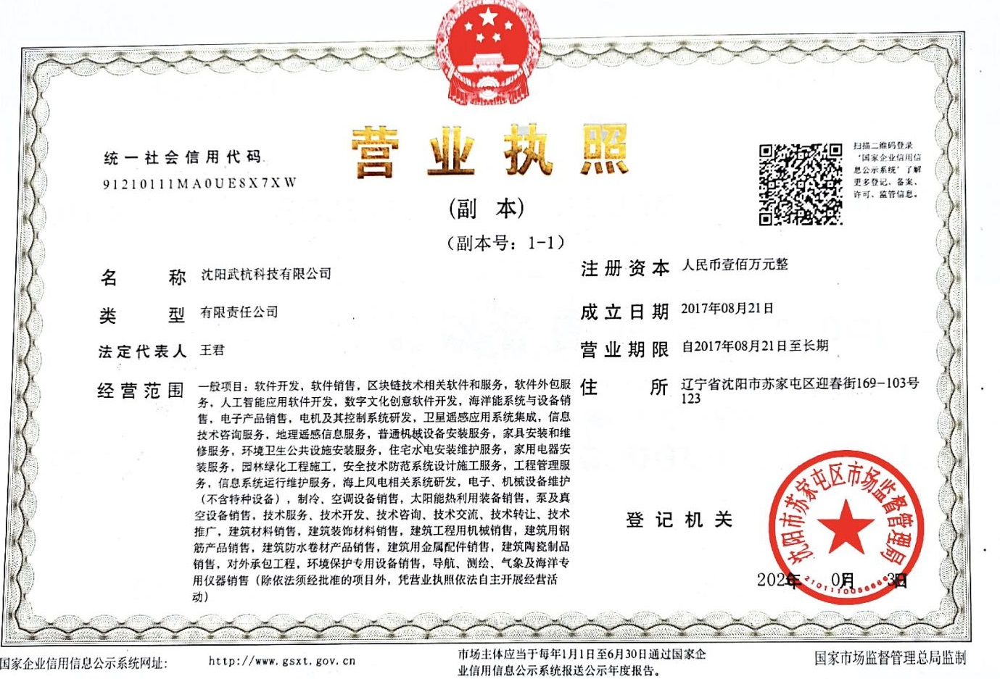
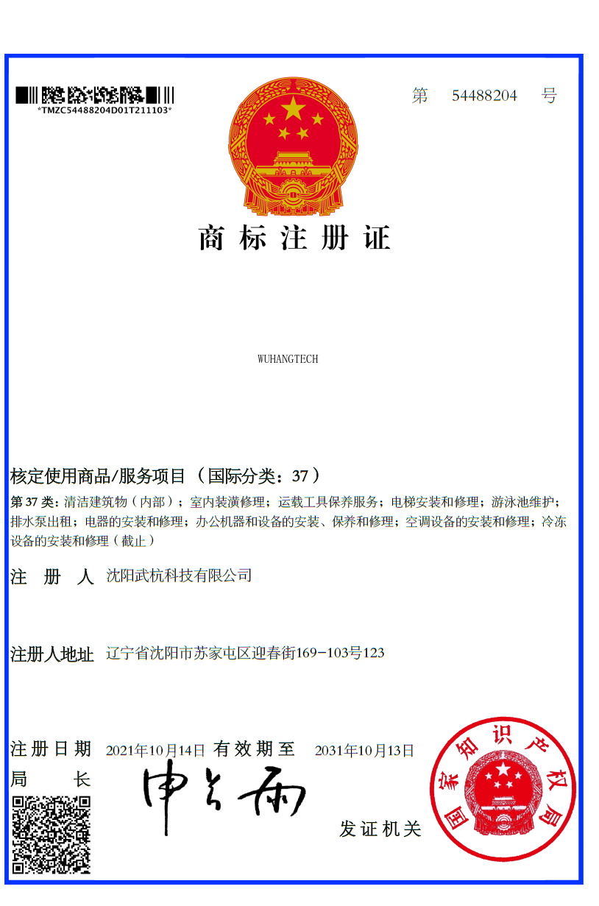
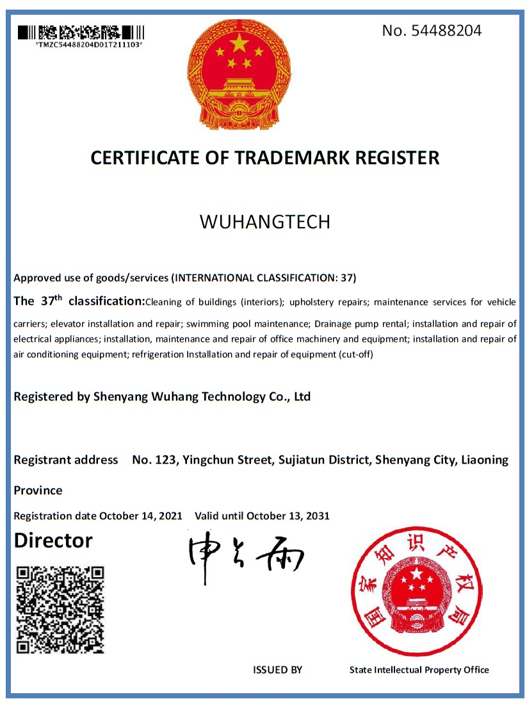

Profile
Dr. Jun Wang is a profession and academia in the following field: Mechanical Design, Mechanical Dynamics Simulation, Fluid Mechanics, Heat Transfer and Combustion Scientific Instrumentation and Measurement, as well as Data Acquisition and Optimization.
Education
2006-2013 Doctor of Philosophy
School of Mechanical Engineering, Huazhong University of Science and Technology
1998-2001 Master of Engineering
School of Power and Mechanical Engineering, Wuhan University
1987-1991 Bachelor of Engineering
School of Power and Mechanical Engineering, Wuhan University
Work History
• 2017-Current, Founder and CEO, Shenyang Wuhang Technology Co. Ltd.
• 2001-Current, Lecturer,
College of mechanical & electrical engineering, China Jiliang University
• 2018-2019, Visiting Fellow
Faculty of Engineering and Information Sciences, University of Wollongong
• 2001-2001, Satellite Test Engineer,
Institute 809, Studio 5, Shanghai Space Agency
• 1991-1998, Assistant Engineer,
Bulk transport design institute, Shenyang Mining Machinery Factory
Bibliographic
1) Ying, Z., Wang, Y., He, YC, & Wang, J, (2022). Virtual sensing
techniques for nonlinear dynamic processes using weighted probability dynamic
dual-latent variable model and its industrial applications. Knowledge-Based
Systems 235 107642.
2) Ying, Z., Wang, Y., Wang, J., & He, Y. (2021). A dynamic latent
structure with time-varying parameters for virtual sensing of industrial process
with irregular missing data. IEEE Access 9. pp.77017-77027.
3) Yuxue, X. U., Wang, Y., Yan, T., HE Yuchen, Wang, J., & De, G. U., et
al. (2021) Quality-related locally weighted soft sensing for non-stationary
processes by a supervised Bayesian network with latent variables. Frontiers of
Information Technology & Electronic Engineering 22 (9), pp.1234-1246
4) Xu Lijun, Chen Zichen, Li Xiaolu ＆ Wang Jun (2016), Design and
Ｒesearch on the On-line Blending System of Diesel and DME, Automotive
Engineering, 38(3), 274-279
5) Li, X., Sun, Z., Gu, L., Han, J., Wang, J., & Wu, S. (2016). Research
of fuel temperature control in fuel pipeline of diesel engine using positive
temperature coefficient material. Advances in Mechanical Engineering, 8(1),
1687814015624837.
6) Wang, J., Kang, Y., Yang, L., Li, X., & Yan, T. (2015). Study on
biodiesel heat transfer through self-temperature limit injector during vehicle
cold start. Thermal Science, 19(6), 1907-1918.
7) Wang, J., & Xiao, L. L. (2013). Dynamic temperature test for ptc
material used to heat diesel. Applied Mechanics and Materials, 321-324, 158-162.
8) Xiaolu Li, Juan Li, Ying Li, Jun Wang, Cangsu Xu (2012) Research
Status of Gas-Liquid Two-Phase Flow in Diesel Fuel System and Discussion on Its
Flow Regime Identification, Small Internal Combustion Engine and Motorcycle,
41(6), 80-86
9) Jun Wang, Tiebang Xie, Xiaolu Li, et al (2011), Study on heat
transfer of transient and high-pressure flow field in PTC-base injector during
cold-start, Small Internal Combustion Engine and Motorcycle,
40(3), 38-41
10) Lefeng Gu, Xiaolu Li, Jun Wang (2011), Simulation of diesel fuel heating
under transient high pressure, Journal of China University of Metrology, 24(4),
337-343
11) Xiaolu Li, Lefeng Gu, Jun Wang, et al (2011),
Simulation of diesel fuel heating by using PTC temperature self-limited
materials, Journal of Agricultural Mechanization Research, 33(11), 211-216.
12) FANG, X., LI, X., WANG, J., LI, Y., & ZHAO, X. (2010). Study on Fuel
System Performance under Different Diesel Temperature. Tractor & Farm
Transporter 37(4), 31-33,36.
13) Lefeng Gu, Xiaolu Li, Jun Wang, Ying Li, Ming Li (2010). Temperature
Characteristics for PTC Material Heating Diesel Fuel. Proceedings of SPIE Sixth
International Symposium on Precision Engineering Measurements and
Instrumentation, Vol. 7544 75445C1-7.
14) Wang, J. (2009). Study on ARM-Based Embedded NC System. In Artificial
Intelligence and Computational Intelligence, 2009. AICI'09. International
Conference on (Vol. 4, pp. 538-544). IEEE.
15) Wang, J., & Kang, Y. (2009). Study on Medical Image Processing Algorithm
Based on Contourlet Transform and Correlation Theory. World Congress on Computer
Science and Information Engineering, 233-238.
16) Wang, J., & Kang, Y. (2008). Study on multi-scale-based 3-D surface
topography evaluation algorithm. In Nano/Micro Engineered and Molecular Systems,
2008. NEMS 2008. 3rd IEEE International Conference on (pp. 774-779). IEEE.
17) Wang, J., & Kang, Y. (2008). A new MSBF-based HDR image processing
algorithm. In Cybernetics and Intelligent Systems, 2008 IEEE Conference on (pp.
1232-1237). IEEE.
18) Wang, J., & Kang, Y. (2008). Study on MSBF-based HDR Image
Compression. Journal of Information & Computational Science, 5(4), 1665-1672.
19) Juan Feng, Xiaolu Li, Jun Wang (2007), The design of the CAN bus node of
the project machinery distributed control system Construction Machinery and
Equipment, 38(12), 46-51.
20) Wang, J., Kang, Y., & Xu, L. (2007, November).
STABCC: a new 3D surface topography algorithm based on contourlet transform and
correlation theory. In3rd International Symposium on Advanced Optical
Manufacturing and Testing Technologies: Advanced Optical Manufacturing
Technologies (Vol. 6722, p.67223I). International Society for Optics and
Photonics.
21) Jun, WANG, Lijun, XU, Xiaolu, & LI, Yan Kang (2007). Dynamic Modeling
for the Main Transmission System of Ship-lift Based on Sub-structure Method.
Proceeding of ICMEN2007, International Conference on Mechanical Engineering and
Mechanics, pp998-1002.
22) Wang Jun, Li Xiaolu. (2007). Exploration of
undergraduate education in mechanical and electronic majors, Higher
Education Science, pp20-22.
23) Zeng Qiyong, Shan Yuekang, Huang Tiequn, Wang Jun, Feng Juan, & Wang
Minhua. (2006). "Interchangeability and Measurement Basis" Curriculum Teaching
Reform Analysis. Journal of Technical Supervision Education, 01(v.4; No.12),
25-29.
24) Jiang HQ, GUO J, Wang J, Shan YK (2003). Structure of three-dimensional
model of helical gear based on VBA. Journal of Machine of Design 20(11), 57-58.
25) Jun Wang, Haiqing Jiang, Yuekang Shan. (2003).
Dynamics model built on the primary drive system of shiplift based on
sub-structure method. Journal of China University of Metrology, 14(2),
117-119.
26) Jun Wang, Gongpin Wu, Xiaohui Xiao, (2001). Study on the dynamic
simulation of the operation of large ship lift, Water Conservancy & Electric
Power Machinery, 23(4), 14-16.
Patents
1) Wang, Jun 2009, An injector with built - in positive temperature coefficient ceramic heating material. CN (patent) ZL2007100705996, filed September 4, 2007, and issued July 29, 2009.
2) Wang, Jun 2018, Ice ball lock system with active warning function. CN (patent)ZL 2016102473511, filed April 18, 2016, and issued August 28,2018.
3) Wang, Jun, Intelligent hockey lock system. CN (patent)ZL 2016102473441, filed April 18, 2016, and issued August 28,2018.
4) Wang, Jun 2018, Ice hockey locking system capable of intelligently alarming CN (patent)ZL 2016102473418, filed April 18, 2016, and issued August 28,2018.
5) Wang, Jun 2018, Ice hockey lock system with active alarming function. CN (patent) ZL 2016102473526, filed April 18, 2016, and issued August 28,2018.
6) Wang, Jun 2017, But load supplies three -phase four -wire electric energy meter system of ferroelectric phase line automatic switch-over. CN (patent) ZL 2017200484352, filed January 12, 2017, and issued August 15,2017.
7) Wang, Jun 2017, can detect blend switch of self-trouble. CN (patent)ZL 201720048448X, filed January 12, 2017, and issued August 11,2017.
8) Wang, Jun 2020, Surface roughness prediction method based on improved LSTM network. CN (patent) CN112069966A, filed August 31, 2020, and published December 1, 2020.
9) Wang, Jun 2021, A central air conditioning mount, CN (patent) ZL 2021214458491, filed June 28, 2021, and issued December 7, 2021.
10) Wang, Jun 2017, Composite switch and its precise zero-crossing switching control method. CN (patent) ZL 2017100298264, filed January 12, 2017, and issued September 11, 2018.
11) Wang, Jun 2018, Ultrasonic atomizing toothbrush. CN (patent) ZL 2015100011744, filed January 4, 2015, and issued September 11, 2018. (This patent is currently being converted into Shenyang Wuhang Technology Co., Ltd., which is owned by Wang Jun).
Projects – Principal Investigator
1) New technological exploration on energy conservation and emission reduction: a study on the heat transfer and fuel atomization of high-pressure transient flow field in ptc-base injector in cold start, Fund No. Y1110666, Zhejiang Provincial Natural Science Foundation.
2) Based on PTC automatic temperature injector heat transfer analysis, contract number, contract No. H091221, Hangzhou Luen Heng Communication Equipment Co., Ltd
3) Simulation and development research based on PTC self-controlled temperature injector, contract No. 081224, Hangzhou Luen Heng Communication Equipment Co., Ltd
4) Android-based land assessment software development, contract No. 081224, Hangzhou Fager Electronics Co., Ltd
5) Research on Filter Evaluation Algorithm in Surface Roughness Measurement System, contract No. 06-192, Mechatronic Engineering Company, Huazhong University of Science and Technology
6) Arable Land Quality Assessment Software Development, contract No. H151206, Hangzhou Fager Electronics Co., Ltd
7) Digital display measuring device, contract No. 04-11, Shaoxing Traditional Food Co., Ltd
Projects - Participant
8) Study on Coupling Dynamics Behavior and Measurement Error Model of Multi - axis Super - precision Motion System, fund No. 51075377, National Natural Science Foundation of China.
9) Development of diesel and dimethyl ether mixed injection systems for diesel engines, fund No. 2006C21127, Zhejiang Science and Technology Department.
10) PTC material control temperature heating liquid to improve the key generic technology of atomization, fund No. 2011C21060, Zhejiang Science and Technology Department.
11) Automotive Filtration Development, contract No. H101318.
12) Development of intelligent control system for automotive electric master cylinder, contract no. H151227.
13) Development of integrated system for filtration module assemblies for automotive filters, contract No. H1161015.
14) Apply TRIZ theory to cultivate the exploration of innovation ability of mechatronic engineering students，fund No. 02-1111G130, Office of Zhejiang Provincial Education Science Planning Leading Group.

Dr Kang Yan
Profile
Dr. Yan Kang is a profession and academia in the following fields: Smart City, Geographic Information System (GIS)， Remote Sensing (RS), Urban Eco-environment，as well as Vulnerability Assessment.
Education
2008-2012 Doctor of Philosophy
School of Earth Sciences, Zhejiang University
2003-2006 Master of Engineering
School of Remote Sensing and Information Engineering, Wuhan University
1997-2001 Bachelor of Engineering
School of Remote Sensing and Information Engineering, Wuhan University
Work History
2017-Current Co-Founder
Shenyang Wuhang Technology Co. Ltd
2013-Current Assistant Researcher
Institute of Land and Urban-Rural Development, Zhejiang University of Finance and Economics
2006-2008 Digital 3D City Engineer
Zhejiang Youse Surveying and Mapping Institute
2001-2003 Remote Sensing and Photogrammetry Data Processing Engineer, Shanxi Provincial Bureau of Surveying and Mapping
Bibliographic
1) Kang, Y., Pan, D., Bai, Y., He, X., et al., (2013, January). Areas of
the global major river plumes. Acta Oceanological Sinical, 32(1), 79-88.
2) Kang Y. (2012). Research on Web-based Ocean Satellite Data Service
(Doctoral dissertation, Hangzhou: Zhejiang University). (Chinese，Doctoral
dissertation)
3) Chen, X., Pan, D., Bai, Y., He, X., Chen, C. T. A., Kang, Y., & Tao, B.
(2015). Estimation of typhoon-enhanced primary production in the South China
Sea: a comparison with the Western North Pacific. Continental Shelf Research,
111, 286-293.
4)
Kang, Y., Pan, D., He, X., Wang, D., & Chen, J. (2010, October). Metadata
research and design of ocean color remote sensing data based on web service. In
Earth Resources and Environmental Remote Sensing/GIS Applications (Vol. 7831,
p.783117). International Society for Optics and Photonics.
5)
Song J, Li. J, Xie T., Kang Y., & Li S. (2008). Statistical analysis of the
spatial distribution pattern of population in Hainan Province based on GIS.
Surveying and Mapping Science, 33(6), 144-145.
6)
Kang, Y., & He, X. (2009, October). The integrated management system of ocean
color remote sensing data. In MIPPR 2009: Remote Sensing and GIS Data Processing
and Other Applications (Vol. 7498, pp. 114-119). SPIE.
7)
Kang, Y. (2007, February). Data format conversion based on ArcGIS Engine.
Zhejiang Surveying and Mapping, (2), 36-37. (Chinese)
8)
Wang, J., & Kang, Y. (2008， September). A new MSBF-based HDR image processing
algorithm. In 2008 IEEE Conference on Cybernetics and Intelligent Systems (pp.
1232-1237). IEEE.
9)
Wang, J., & Kang, Y. (2008). Study on MSBF-based HDR Image Compression. Journal
of Information & Computational Science, 5(4), 1665-1672.
10)
Wang, J., Kang, Y., Yang, L., et al. (2015). Study on biodiesel heat transfer
through self-temperature limit injector during vehicle cold start. Thermal
Science, 19(6), 1907-1918.
11)
Wang, J., &Kang, Y. (2009, March). Study on medical image processing algorithm
based on contourlet transform and correlation theory. In 2009 WRI World Congress
on Computer Science and Information Engineering (Vol. 6, pp. 233-238). IEEE.
12)
Wang, J., & Kang, Y. (2008, January). Study on multi-scale-based 3-D surface
topography evaluation algorithm. In 2008 3rd IEEE International Conference on
Nano/Micro Engineered and Molecular Systems (pp. 774-779). IEEE.
13)
Wang, J., Kang, Y., & Xu, L. (2007, November). STABCC: a new 3D surface
topography algorithm based on contourlet transform and correlation theory. In
3rd International Symposium on Advanced Optical Manufacturing and Testing
Technologies: Advanced Optical Manufacturing Technologies (Vol. 6722, p.
67223I). International Society for Optics and Photonics.
14)
Kang, Y.& Zhu Jinwei. (2015, April). Analysis of soil pH changes in cultivated
land in Songyang County from 2006 to 2013. Zhejiang Agricultural Science,
2015(4), 519-523. (Chinese)
15)
Kang, Y., Pan, D., He, X., Wang, D., Chen, J., & Chen, X. (2011, October).
Oceanic satellite data service system based on web. In Earth Resources and
Environmental Remote Sensing/GIS Applications II (Vol. 8181, pp. 366-373). SPIE.
16)
Bai, Y., He, X., Pan, D., Chen, C. T. A., Kang, Y., Chen, X., & Cai, W. J.
(2014). Summertime Changjiang River plume variation during 1998-2010. Journal of
Geophysical Research: Oceans, 119(9), 6238-6257.
17)
Chen, C. T., Huang, T. H., Chen, Y. C., Bai, Y., He, X., &Kang, Y. (2013).
Air-sea exchanges of CO2 in the world's coastal seas. Bio geosciences, 10(10),
6509-6544.
Patents and Software copyrights：
1) Kang, Yan 2018, A solar panel rotating bracket, CN(Patent)
ZL 2014106793863, filed November 21, 2014, and issued July 24, 2018.
2) Kang, Yan 2018, An ultrasonic spray toothbrush, CN(Patent)
ZL 2015100962754, filed January 4, 2015, and issued September 11, 2018.
3) Kang, Yan 2018, A spray toothbrush, CN(Patent) ZL 201510001173.X, filed January 4, 2015, and issued September 11, 2018.
4) Kang, Yan 2021, A central air conditioning mount, CN (patent)
ZL 2021214458491, filed June 28, 2021, and issued December 7, 2021.
5) Kang, Yan, 2015, An ultrasonic water jet toothbrush, CN (patent)
ZL 2015201260345, filed March 04, 2015, and issued November 25, 2015.
6) Kang, Yan 2015, An ultrasonic spray toothbrush, CN (patent)
ZL 2015200019421, filed January 04, 2015, and issued July 29, 2015.
7) Kang, Yan 2014, A high-efficiency, energy-saving, mosquito-killing, multi-functional desk lamp, CN (patent) ZL 2014201136220, filed March 11, 2014, and issued October 15, 2014.
8) Kang, Yan 2014, A detachable flowerpot, CN (patent)
ZL 2014203719587, filed July 2, 2014, and issued December 10, 2014.
9) Kang, Yan 2015, A water spray toothbrush device, CN (patent)
ZL 2015201260472, filed March 04, 2015, and issued November 25, 2015.
10) Kang, Yan 2015, a spray toothbrush. CN (patent) ZL 2015200019417, filed January 04, 2015, and issued May 27, 2015.
11) Kang, Yan 2015, A solar panel rotating bracket, CN (patent)
ZL 2014207107541, filed November 21, 2015, and issued July 01, 2015.
12) Zhejiang Province cultivated land quality annual update data quality inspection software (referred to as update verification software) V1.0.0. CN (Software copyrights) Registration number:2015SR183601, filed March 01, 2015, and issued September 21, 2015.
13) Zhejiang Province Cultivated Land Quality Class Evaluation Software (Old Index) (abbreviation: Folding Cultivation Evaluation) V1, CN (Software copyrights) Registration number:2015SR187429, filed March 04, 2015, and issued September 25, 2015.
Projects-Principal Investigator
1) Research on the law of temporal and spatial differentiation of the coupling degree between coastal urbanization and ecological environment and its mechanism taking Cixi City as an example (fund No.: LQ16D010003), Zhejiang Provincial Natural Science Foundation Project.
2) Research on the temporal and spatial differentiation of rapid coastal urbanization and its environmental effects taking Cixi City as an example (fund No.:2014hx103), Second Institute of Oceanography, Ministry of Natural Resources.
Projects-Participant
3) Research on functional transformation and differential regulation of cultivated land driven by supply and demand Project of the Ministry of Education (fund No.: 19YJA630099), Humanities and Social Sciences Planning Fund Project of the Ministry of Education.
4) Research on the estimation of near surface nitrogen dioxide concentration in Zhejiang Province based on multi-source data and machine learning (fund No.: LQ19D050001), Zhejiang Provincial Natural Science Foundation Project.
5) Research on the Evolutionary Mechanism, Dynamic Simulation and Guidance Strategies of the Entrepreneurial Behavior of the Bottom Group in the Process of Urbanization (fund No.: 2016C35002), Zhejiang Province Soft Science Research Program Project.
6) Research on the Overall Governance Strategy of Promoting the Entrepreneurship of the Bottom Group in the Process of Urbanization (fund No.:2016C35002), Zhejiang Soft Science Research Project,
7) Post-evaluation of post-disaster farmers' centralized resettlement and reconstruction methods: sustainability, risk simulation and control mechanism (fund No.:71503228), National Natural Science Foundation of China.
8) Multi-scenario simulation research on multi-dimensional identification and governance policies of expropriation and demolition conflicts in new city development (fund No.: 2013QN064), A key youth project of important humanities and social science public relations projects in colleges and universities in Zhejiang Province.
9) Development of "Ocean-1" ship borne satellite remote sensing information service system (fund No.: DYXM115030903), Ocean "Eleventh Five-Year Plan" Project.
10) Primary production, organic carbon storage and carbon sequestration capacity (fund No.: 2009CB421202), project of National 973 Plan.
11) Research on Satellite Remote Sensing Monitoring Technology of Organic Carbon in yellow sea and east Sea (fund No.: 2008AA09Z104), National 863 Program.
12) Development of satellite remote sensing ocean fishery environmental information acquisition and processing technology (fund No.: 2007AA092002), Sub-project of National 863 Program.


Here is
what to say in the license, which is wriiten in Chinese. First of all, It says
this license, whose Unified social credit code is 91210111MA0UE8X7XW, and
Name is Shenyang Wuhang Technology Co., Ltd whose type is Limited Liability
Company, is a copy, whose number is 1-1.
Legal representative is WANG JUN. Registered capital is 1 million CNY. Date
of Establishment is August 21 2017, and Period of business is from August 21
2017 to long term. And Domicile is No.169-103-123, Street Yingchun, Sujiatun
District, Shenyan, Liaoning .
Scope of business include General projects: software development, software
sales, blockchain technology related software and services, software outsourcing
services, artificial intelligence application software development, digital
culture creative software development, marine energy system and equipment sales,
Electronic product sales, motor and its control system research and development,
satellite remote sensing application system integration, information technology
consulting services, geographic remote sensing information services, general
machinery and equipment installation services, furniture installation and
maintenance services, Environmental sanitation public facilities installation
services, residential hydropower installation and maintenance services,
household appliances installation services, landscaping engineering
construction, safety technology prevention system design and construction
services, project management services, Information system operation and
maintenance services, offshore wind power related system research and
development, electronic and mechanical equipment maintenance (excluding special
equipment), refrigeration and air conditioning equipment sales, solar thermal
utilization equipment sales, pump and vacuum equipment sales, technical
services, technology development, technical consulting, technical exchanges,
technology transfer, technology promotion, Building materials sales, building
decoration materials sales, construction engineering machinery sales,
construction steel products sales, building waterproof membrane products sales,
construction metal accessories sales, building ceramic products sales, foreign
contracting projects, environmental protection special equipment sales,
navigation, surveying and mapping, meteorology and marine special instrument
sales (in addition to the law must be approved by the law, with the business
license to carry out business activities in accordance with the law). and
Registration authorities is Shenyang Sujiatun District Market Supervision
and Administration Bureau 2020-1-7
